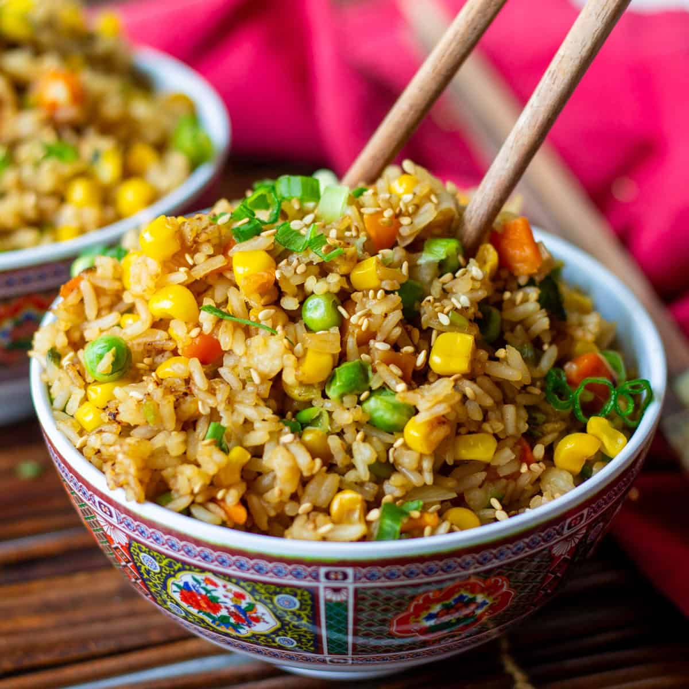

Rajma Chawal
- 1/2 cup rajma (kidney beans), soaked overnight
- 1 cup cooked rice
- 1 small onion, finely chopped
- 1 small tomato, pureed
- 1 tsp ginger-garlic paste
- 1 tbsp oil
- 1/2 tsp cumin seeds
- 1/2 tsp red chili powder
- 1/2 tsp garam masala
- Salt to taste
- Fresh coriander for garnish
Ingredients :
- Pressure cook soaked rajma with water until soft (about 4-5 whistles).
- Heat oil, add cumin seeds, onions; sauté till golden. Add ginger-garlic paste and tomato puree. Cook till oil separates.
- Add chili powder, garam masala, salt, and cooked rajma with some water. Simmer for 15 minutes.
- Serve hot with cooked rice, garnished with coriander.
Making Process :

Vegetable Fried Rice
- 1 cup cooked rice (preferably cold)
- 1/4 cup mixed vegetables (carrot, peas, capsicum), finely chopped
- 1 tbsp oil
- 1/2 tsp ginger-garlic paste
- 1 green chili, chopped
- Salt to taste
- 1 tbsp soy sauce
- 1 tbsp spring onion greens, chopped (optional)
Ingredients :
- Heat oil in a pan, add ginger-garlic paste and green chili; sauté for a minute.
- Add vegetables and stir-fry until tender.
- Add rice, soy sauce, and salt. Mix well and stir fry for 3-4 minutes.
- Garnish with spring onions and serve hot.